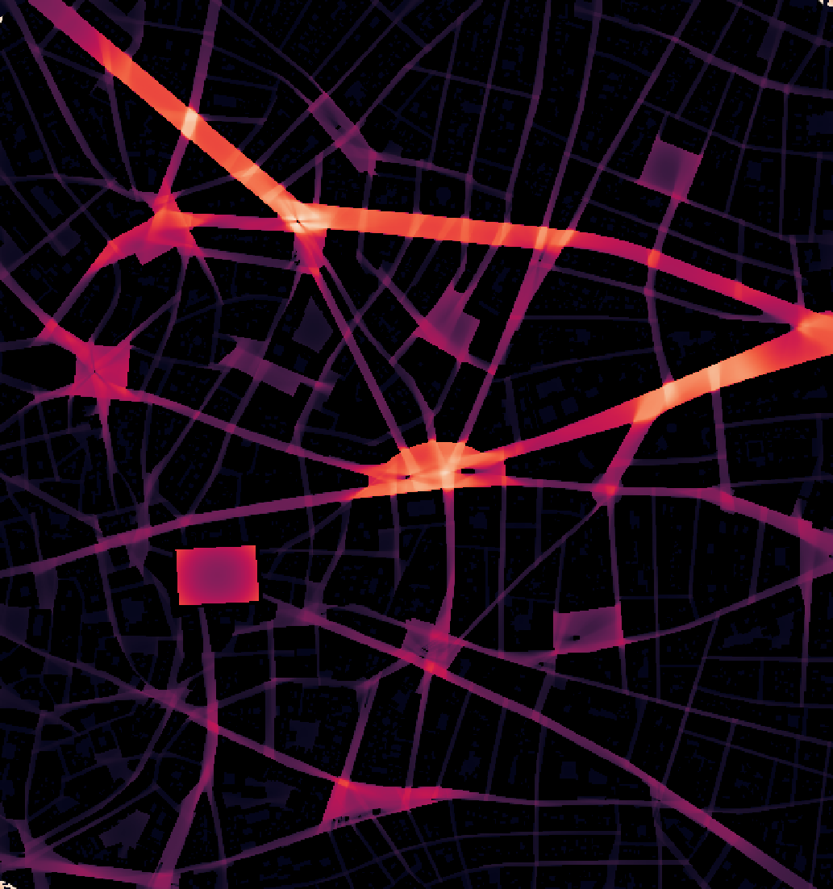

import geopandas as gpd
from cityseer.metrics import visibilityVisibility from GeoPandas data
Generate a visibility analysis from GeoPandas data (or a file opened with GeoPandas).
Open a GeoPandas dataset.
bldgs_gdf = gpd.read_file("data/madrid_buildings/madrid_bldgs.gpkg")
bldgs_gdf.head()| mean_height | area | perimeter | compactness | orientation | volume | floor_area_ratio | form_factor | corners | shape_index | fractal_dimension | geometry | |
|---|---|---|---|---|---|---|---|---|---|---|---|---|
| 0 | NaN | 187.418714 | 58.669276 | 0.491102 | 40.235999 | NaN | NaN | NaN | 4 | 0.700787 | 1.026350 | POLYGON ((448688.642 4492911, 448678.351 44928... |
| 1 | 7.0 | 39.082821 | 26.992208 | 0.472874 | 10.252128 | 273.579749 | 78.165643 | 5.410857 | 4 | 0.687658 | 1.041691 | POLYGON ((440862.665 4482604.017, 440862.64 44... |
| 2 | 7.0 | 39.373412 | 27.050303 | 0.475086 | 10.252128 | 275.613883 | 78.746824 | 5.400665 | 4 | 0.689265 | 1.040760 | POLYGON ((440862.681 4482608.269, 440862.665 4... |
| 3 | 7.5 | 37.933979 | 26.739878 | 0.464266 | 10.252129 | 284.504846 | 75.867959 | 5.513124 | 4 | 0.681371 | 1.045072 | POLYGON ((440862.705 4482612.365, 440862.681 4... |
| 4 | 7.0 | 39.013701 | 26.972641 | 0.472468 | 10.183618 | 273.095907 | 78.027402 | 5.412350 | 4 | 0.687363 | 1.041798 | POLYGON ((440880.29 4482607.963, 440880.274 44... |
bldgs_gdf.crs<Projected CRS: EPSG:25830>
Name: ETRS89 / UTM zone 30N
Axis Info [cartesian]:
- E[east]: Easting (metre)
- N[north]: Northing (metre)
Area of Use:
- name: Europe between 6°W and 0°W: Faroe Islands offshore; Ireland - offshore; Jan Mayen - offshore; Norway including Svalbard - offshore; Spain - mainland - onshore and offshore.
- bounds: (-6.0, 35.26, 0.01, 80.49)
Coordinate Operation:
- name: UTM zone 30N
- method: Transverse Mercator
Datum: European Terrestrial Reference System 1989 ensemble
- Ellipsoid: GRS 1980
- Prime Meridian: GreenwichUse the visibility module to create a visibility analysis from GeoPandas data. The visibility will be generated based on the GeoPandas data provided to the visibility_from_gpd method.
Pay particular attention to:
- The
boundsparameter, which defines the geographical area in the same CRS as your dataset. The order is Left, Bottom, Right, Top. - The
out_pathparameter, which specifies where to save the output files. The filepath must exist. The extension of the output file will be.tifand the file will be saved in GeoTIFF format, which can be opened in QGIS. - The
from_crs_codeparameter, which specifies the coordinate reference system (CRS) to use for the input data. This should match the CRS of your GeoPandas dataset. If you are unsure, you can check the CRS of your GeoDataFrame using.crs. - The
to_crs_codeparameter, which specifies the coordinate reference system (CRS) to use for the output. The default is the local UTM, but you can change it to any valid CRS code. - The
view_distanceandresolutionparameters, which control the analysis granularity.
There is a performance trade-off for the bounds, view_distance, and resolution. A larger view_distance or higher resolution will result in a more detailed graph but may take longer to compute and require more memory.
visibility.visibility_from_gpd(
bldgs_gdf,
bounds=(439658, 4473632, 440914, 4474972),
out_path="recipes/visibility/images/madrid_vis",
from_crs_code=25830, # set geopandas CRS
to_crs_code=25830, # set output CRS
view_distance=150, # can use a larger view distance - but slower
resolution=2, # can use a higher resolution - but slower
)INFO:cityseer.metrics.visibility:Preparing buildings raster.
INFO:cityseer.metrics.visibility:Running visibility.
100%|██████████| 420760/420760 [01:40<00:00, 4178.07it/s]The output will generate three files:
- A
densitymeasure - the number of visible pixels. - A
farnessmeasure - the summed distance to visible pixels - favours farther views (up toview_distance). - A
harmoniccloseness measure - the summed inverse of the distance to visible pixels - favours close adjacency to open spaces.
Visualised as farness with values clipped to de-accentuate rooftops while recovering detail in relation to the ground.
